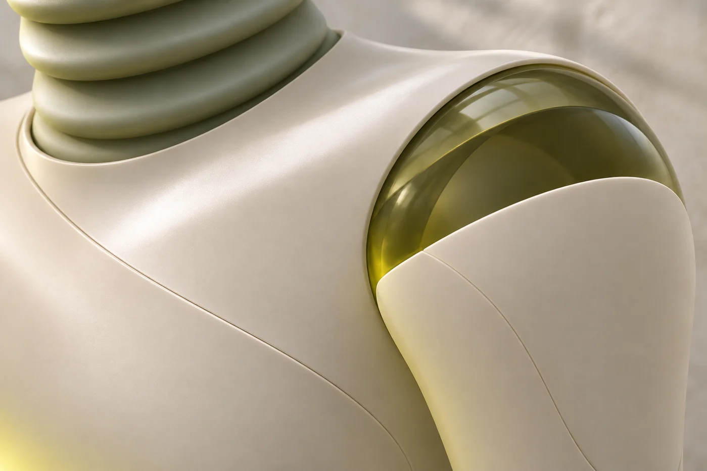
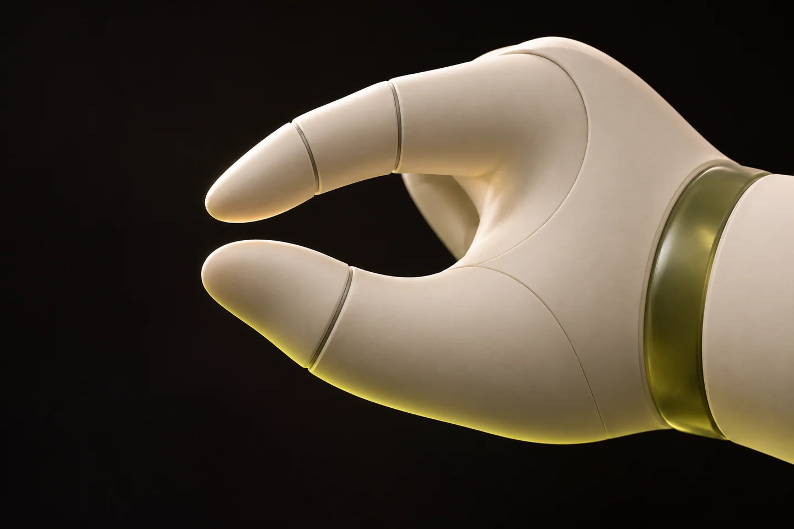

AI·로봇 스타트업의 하드웨어 B팀
AI는 A팀이,
피지컬은 B팀이.
파인 튜닝을 시작할 피지컬을
결정된 양산 방향으로, 더 빨리 만듭니다.
해 온 일 1994 — 2026
금형에서
로봇까지.
30년의 개발 경력
1994년 3D 설계로 시작해 금형 1,000벌 이상, 다수의 자동화 장비를 만들었습니다.
부천에서 설계하고 대구 북구 공장에서 가공·조립합니다.
고객사 이름과 포트폴리오는 비밀 유지 서약 이유로 공개하지 않습니다.
2025 — 2026오이 수확 로봇 외 4건
- 오이 수확 로봇양팔·리프트·비전, 농업 로봇 회사의 B팀으로 개발(진행 중)
- 수확 팔·그리퍼엔드이펙터와 구동부 설계
- 이송 로봇·보관 스테이션온실용 이송·보관 설비 설계
- 온실 방제 로봇3D 프린트를 활용한 설계
- 제어 구성 시험모터·센서, CAN 통신 제어 보드 시험 구동
2024포장 음식물 이물 검사 장비 외 2건
- 포장 음식물 이물 검사 장비내부 이물 검사 장비 기구 설계
- 배송 로봇(AMR)최적화 기구 설계
- 콜드체인 트레이기구 설계
20236축 로봇 방사능 폐기물 처리 자동화 외 2건
- 6축 로봇 방사능 폐기물 처리 자동화연구기관 설치용, 수동 작업을 로봇 자동화로. 초기 개념·기구 설계
- 택배 이송 로봇용 스테이션설계
- 차량용 디스플레이 조립 지그설계
1994–2022 이력 보기
2020 — 2022타워형 고밀도 택배 보관설비 외 2건
- 타워형 고밀도 택배 보관설비정부 연구과제, 택배 라스트마일용. PM, 초기 개념 설계, 핵심 기능 특허 출원
- 공간 멸균장비미스트 밀도를 고르게 조절하는 소독 장비. 부품 재배치·기능 개선, 워킹 목업 기구 설계
- 언택트 빌트인 박스새 아파트 세대별 택배·음식·세탁물 보관(냉장·냉동·모션). 구동 메커니즘 설계, 특허 출원
2019 — 2020복약 IoT 기기 외 2건
- 복약 IoT 기기앱과 연동해 알약을 한 알씩 공급하는 케이스. 기능·디자인 개선, 시뮬레이션 설계
- 커피머신·제빙기업소 대여용 탁상 머신. 소량 생산에 맞춘 디자인·기구 설계, 검수
- 치과 검진·치료용 모션 체어개발 참여. 메커니즘 검토, 기구 설계, 양산 검토
2017 — 2018모듈형 LED 조명
- 모듈형 LED 조명방·거실·부엌·욕실용 모듈. 디자인, 기구 설계, 금형, 사출, 조립, 베트남 생산 셋업
2016 — 2017임플란트 CNC 생산라인 자동 트레이 장비 외 1건
- 임플란트 CNC 생산라인 자동 트레이 장비가공 후 나오는 소형 부품을 로터리로 분배. 개념 설계, 제작, 조립, 납품
- CFRP 부품·금형방산 국책과제(드론 부품), 자동차 서스펜션 암, CFRP 스프링. 금형 구조 설계와 가공
2013 — 2015베트남 공장 설립·법인 운영
- 베트남 공장 설립·법인 운영대형 전자회사 모바일 협력. 도색·증착 공정용 마스킹 부품 설계, 금형, 사출 생산, 영업
2004 — 2012휴대폰 기구 개발 외 2건
- 휴대폰 기구 개발대형 전자회사 모바일. 기구 설계, 금형 제작, 사출, 조립
- 자동차 브레이크 램프국산 대형 세단 브레이크 램프 개발(2011 — 2012)
- 모바일 자동화 장비인서트 사출 자동화 장비, 조립 장비 개발·제작(2008 — 2011)
2001 — 2004휴대폰 조립 장비
- 휴대폰 조립 장비해외 휴대폰 회사 모바일 조립 장비 개발
1994 — 2000모니터·PC 부품 금형 외 2건
- 모니터·PC 부품 금형국내외 모니터·PC 부품, 일본 수출 금형 제작(1996 — 2000)
- 자동화 장비자동화 장비 제작 참여(1995 — 1996)
- 3D 모델링 시작CAD·CAM(1994)
- 제품 디자인
- 기구 설계(PM)
- 장비·지그 설계
- 금형 제작
- 부품 가공
- 양산(BOM)

대표님 팀은 A팀,
저희는 B팀.
- A팀 대표님 팀
- AI 모델, 파인 튜닝, 핵심 기술
- B팀 가온제이에이치
- 피지컬 설계·제작, 제어 구성·시험 구동, 양산 준비
이런 팀의 B팀이 됩니다
- 아이디어는 있는데 시험할 피지컬이 없는 팀
- 시제품을 양산 구조로 다시 만들어야 하는 팀
- 하드웨어 엔지니어를 구하는 중인 팀
B팀이 맡는 일
- 시험용 피지컬
- 데이터 수집 장비
- 엔드이펙터·센서 장착부
- 양산형 외장
- 조립·시험 지그
- 제어 구성과 첫 구동

구간마다 계약합니다.
3D 프린팅, 가공, 금형 순서로 단계를 나누어 필요한 만큼만 투자합니다.
- 01
움직이는 1호기
설계부터 시험 구동까지
- 02
개량과 추가 대수
튜닝·실증 결과 반영
- 03
양산 준비
금형, 지그, 협력사 연결
B팀이 더 빠른 이유
처음부터 결정된 양산 방향으로. 1호기에서 한 튜닝과 데이터를 양산품에서 그대로 씁니다.
제조 현장을 압니다. 한국·베트남·중국에서 양산을 관리했습니다.
피지컬이 필요하다면,
B팀을 불러 주세요.
- 담당
- 서경원
- 설계·기획 사무실
- 경기도 부천시 (골든IT 625호)
- 가공·조립 공장
- 대구광역시 북구
- 제어·시험 구동
- 제어 엔지니어